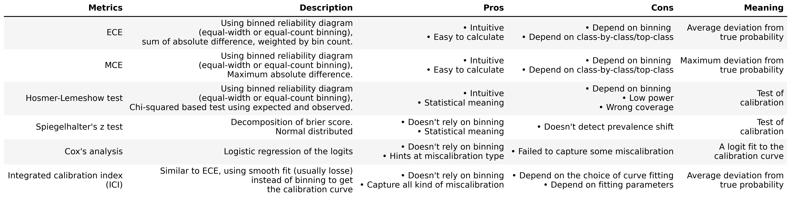

Summary and guide for calzone
We provide a summary of the calibration metrics provides by calzone, including the pros and cons of each metrics. For a more detailed explanation of each metrics and how to calculate them using calzone, please refer to the specific notebook.

Guide to calzone and calibration metrics
calzone aims to access whether a model achieves moderate calibration, meaning whether \(\mathbb{P}(\hat{Y}=Y|\hat{P}=p)=p\) for all \(p\in[0,1]\).
To accurately assess the calibration of machine learning models, it is essential to have a comprehensive and reprensative dataset with sufficient coverage of the prediction space. The calibration metrics is not meaningful if the dataset is not representative of true intended population.
calzone takes in a csv dataset which contains the probability of each class and the true label. Most metrics in calzone only work with binary classification and which transforms the problem into 1-vs-rest when calcualte the metrics. Therefore, you need to specify the class-of-interest when using the metrics. The only exception is the \(ECE_{top}\) and \(MCE_{top}\) metrics which works for multi-class problems. See the corresponding documentation for more details.
We recommend visualizing calibration using reliability diagrams. If you observe general over- or under-estimation of probabilities for a given class, consider applying a prevalence adjustment to determine if it’s solely due to prevalence shift. After prevalence adjustment, plot the reliability diagrams again and examine the results of calibration metrics.
For a general sense of average probability deviation, we recommend using the Cox and Loess integrated calibration index (ICI). To test for calibration, we suggest using Spiegelhalter’s z-test. Other metrics such as Expected Calibration Error (ECE), Cox slope/intercept, and Hosmer-Lemeshow (HL) test depends strongly on binning and should be used with caution.
Please refer to the notebooks for detailed descriptions of each metric.